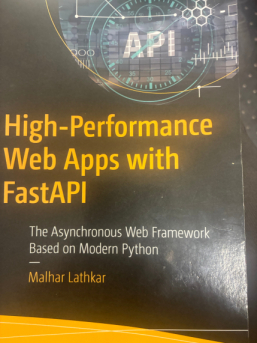

Fast API
This talk is losely based on this book :

High-Performance Web Apps with FastAPI
The Asynchronous Web Framework Based on Modern Python
Malhar Lathkar
The talk repo is
https://github.com/nilesOien/softwareTalk_FastAPI
This is run on a machine with the following installed (particularly the ones marked *) :
- Python (fairly recent version) *
- git *
- The Python package manager uv *
- Web browser *
- The bat utility
- sqlite3
- R
- Rust